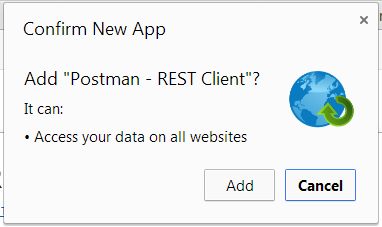
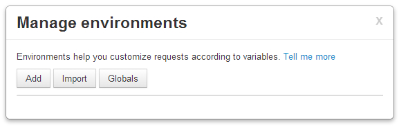
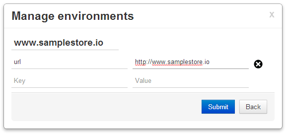
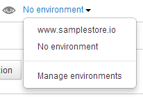
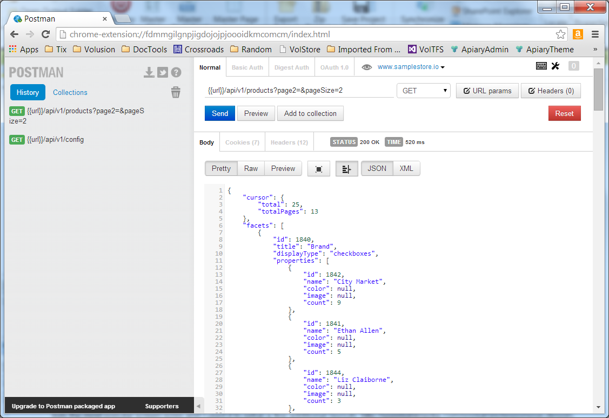
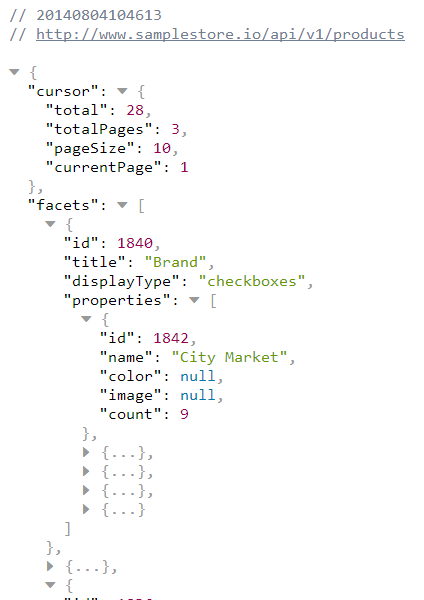
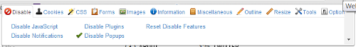

Install Apps and Plugins
Add optional apps and plugins to test API calls and preview themes.
Table of Contents
Postman
Postman is an optional tool development for making API calls to view returned JSON. You can download and install Postman to Chrome through the Chrome Extension. This Chrome app allows you to create requests quickly, keep a record of all sent requests and collections, provide open responses for JSON and XML, support global variables, modify headers, preview via a quick look feature, and numerous other features and options.
Postman Installation
Download and install the addon through your Chrome browser for either Windows PC or Mac OS.
| Step | What to Do |
|---|---|
| 1 | You can download and add the Chrome Extension at this link. |
| 2 | Click Free to download and install. |
| 3 | You will be prompted to log into your Google account. |
| 4 | Once logged in, a confirmation message displays. Click Add.  |
| 5 | The Postman - REST Client will display in your list of Chrome apps. Click on Postman to configure a few settings for using the Storefront API. |
| 6 | Click on the environment manager to add the samplestore.io site. |
| 7 | On the Manage environments screen click Add.  |
| 8 | Enter a name for the environment as www.samplestore.io. For the Key, enter url. For the Value, enter http://www.samplestore.io. Click Sumbit.  |
| 9 | From the list of environments, select www.samplestore.io.  |
Using Postman
With the app added to Chrome, you can add a sample collection and make API calls against the Storefront API. The returned JSON displays, providing a sample API interaction for verifying and testing content for custom code. Every entered API call is saved to a history to reuse as needed. A sample collection is provided through the Storefront API at Apiary. A version from 6-25-2014 is available at this link. Save this file and add it to your collections in Postman.
You can make calls to the Storefront API to review the returned JSON and test calls you want to make in your extended storefront interactions and apps.
| Step | What to Do |
|---|---|
| 1 | Click the Apps button in Chrome and select Postman. |
| 2 | Select www.samplestore.io from the domain drop-down menu. |
| 3 | Select the type of operation to perform. The Storefront API supports GET, PUT, POST, and/or DELETE per endpoint. See the Apiary reference for details. |
| 4 | Enter your API call using the following format as an example for getting products: You could use this call for products:  |
JSON Viewer
If you prefer making your API calls directly through a link, you can install the JSON Viewer Chrome Extension. Every returned JSON response will automatically format for ease of reading, prettified with collapsible/expandable sections of code. For example, you could make direct GET calls for listing all products and receive an automatically cleaned up view of the response data in the browser.
JSON Viewer Installation
Download and install the addon through your Chrome browser for either Windows PC or Mac OS.
| Step | What to Do |
|---|---|
| 1 | You can download and add the Chrome Extension at this link. |
| 2 | Click Free to download and install. |
| 3 | You will be prompted to log into your Google account if you are not already logged in. |
| 4 | All returned JSON in the browser will automatically prettify for reviewing. |
Using JSON Viewer
Enter a call to the API through the browser's URL location bar as if visiting a website. The call is received and handled by the system, returning JSON accordingly. The returned code automatically uses the viewer for viewing with controls for collapsing and expanding sections, text colors denoting values and comments.
For example, the call http://www.samplestore.io/api/v1/products returns the following in the viewer:

Web Developer
An extension called Web Developer for Chrome, Firefox, and Opera is available to go beyond simple previewing of your work. The extension adds a suite of web development tools accessible through a toolbar added to your browser. When installed, the extension adds a toolbar to your browser for previewing your theme within your browser, mimicking a tablet, smart phone, and various resolutions as needed.
Web Developer Installation
Download and install the addon through your Chrome, Firefox, or Opera browser for either Windows PC or Mac OS.
| Step | What to Do |
|---|---|
| 1 | You can download and add extension per your browser from this link. |
| 2 | For Firefox, click Add to Firefox. For Chrome, click Free. A message may display requiring access to data. The only data accessed by the tools is for advanced development such as enabling or disabling JavaScript. This is a required message per the browser of your choice. |
| 3 | A toolbar is added to your browser, providing numerous tools for developing and testing your themes and apps. |
Using Web Developer
You can access the tools through your browser via a toolbar. In Chrome, click the Web Developer gear to display a window of tabs. In Firefox, a toolbar displays automatically with a series of drop-down menus. All tools are the same across the browsers including the following:

- Disable - Enable and disable options for your browser including redirects, caching, JavaScript, and proxies.
- Cookies - Manage cookies at a domain level including adding and removing cookies.
- CSS - Manage styles for the currently loaded page to test and review.
- Forms - Manage interactions and formats for loaded forms.
- Images - Test image content, alternate text, including locating issues with broken images.
- Information - View and display information for all aspects and elements of the currently displayed page.
- Miscellaneous - Options for general views and testing including toggle of visited links and clearing private data.
- Outline - Add an outline for visual location of page elements to view, test, and edit.
- Resize - Change the dimensions of the page and browser view to mimic devices, smart phones, and different browser settings. This is a key set of tools for testing responsive design.
- Tools - Validation test tools for your page and domain.
- View Source - Options for viewing and testing the source code for your page.
- Options - Configure settings for your Web Developer extension.